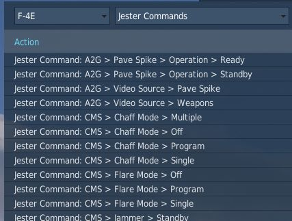
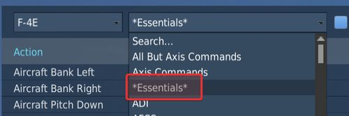
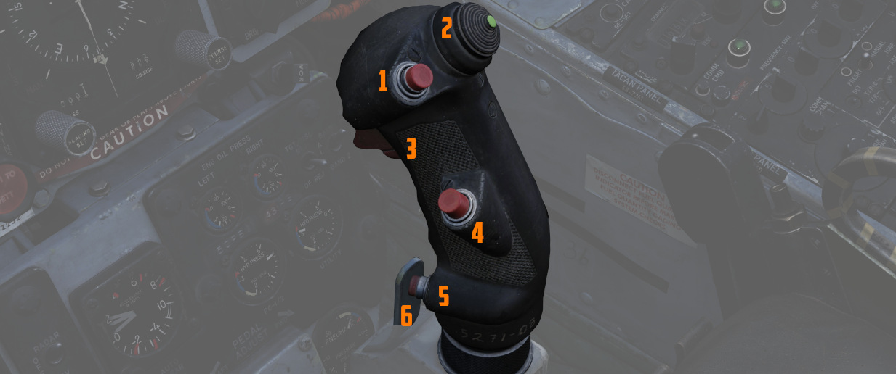
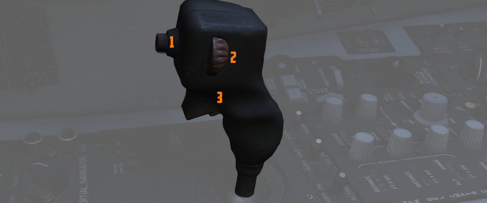

Controls

Available control binds for the Phantom are exhaustive. For any switch, knob or button, you can choose between direct position-binds, increment or decrement binds, a toggle or next option, special binds for 2-way or 3-way switches and assignable axis.
In total, both cockpits feature around 1000 assignable binds and 200 axis each.
As example, the Speed Brake switch provides 8 binds:
- Speed Brake - In
- Speed Brake - Stop
- Speed Brake - Out (Hold)
- Speed Brake - [Aft]
- Speed Brake - [Forward]
- Speed Brake - [Next]
- Speed Brake - In/Stop (3-way up)
The Out-position is marked (Hold) to signal that the position is spring-loaded and will return to center once released.
Binds [Aft] and [Forward] are directional binds that move the switch from the current position into the given direction.
[Next] is similar, but will not stop at the last position and wrap over to the first position again. Likewise, 2-way switches provide a [Toggle] bind that flips the switch between either position.
The (3-way up)-bind is intended to be used with actual 3-way hardware switches, such as present on many external devices. They send a signal on either position (up and down), but no signal on the center position. Hence, the bind will return the switch back to the center when no signal is send.
💡 The (3-way down)-bind is skipped for the Speed Brake, since it would be identical with the spring-loaded Out (Hold)-bind.
All binds are generally assigned at least two searchable categories, the system the bind belongs to and its location in the cockpit. The Master Arm switch for example has categories:
- Weapons
- Main Panel
- Weapon Selection Panel
Sim-Pit
Additionally to regular binds, special [SimPit]-binds are provided that allow controlling any switch or knob via an axis input.
For example, a switch with 2 positions ON and OFF can be controlled with an axis, while the switch changes its position as soon as the axis is pushed beyond its center position.
This is especially useful for builders of cockpit replicas, working mainly with hardware switches whose electronic components send normalized inputs through the entire movement range.
Jester & Crew Chief Commands
Direct binds to control Jester and Crew Chief commands are provided especially for mission designers or users of voice recognition software, such as VoiceAttack.

This allows use of the corresponding actions directly via a bind instead of using the UI to select them.
Binding Guide
When just getting started, a common question is which fundamental controls one should generally bind and have accessible without using the mouse, besides the obvious binds of throttle and stick axis.
Within DCS these binds are categorized as Essentials to make finding them easier.

💡 Items marked bold are highly recommended to be bound. Italic sections are suggestions of which positions to bind.
Pilot
The pilot should focus at binding the major flight controls, as well as combat relevant switches.
Flight Controls
- Stick
- Throttle
- Trim Controls (4 + 2)
- Landing Gear
- Flaps/Slats (Norm, Out, Out & Down)
- Speed Brake (Out, Stop, In)
- Eject
- Nose Gear Steering / Auto Acquisition Button
- Drag Chute (Deploy, Cut)
- Seat Controls (Up, Down)
Startup
To execute the cold-start sequence, binds of interest are:
- Crew Chief Command: External Power > Connect
- Crew Chief Command: Air Source > Connect to Right/Left Engine
- Crew Chief Command: Air Source > Start/Stop Airflow
- Crew Chief Command: Air Source > Load Starter Cartridges
- Start Engine Switch Right/Left (fires up Starter Cartridges)
- Generator Right/Left (On, Off, Ext)
- Right/Left Engine Master Switch
- Right/Left Engine Ignition
- Right/Left Engine Idle Detent
Combat
- Trigger (2nd stage)
- Bomb Button
- Weapon Slew (4)
- Pinky Switch (Gun, Heat, Radar, Reject)
- CAGE Button
- Nose Gear Steering / Auto Acquisition Button
- DSCG Mode (Radar, Off, TV)
- Bombing Tool
- Dispense Countermeasures
- HUD Mode (CW, CCW)
- Delivery Mode (CW, CCW)
- Weapon Selector (CW, CCW)
Navigation
- Navigation Input (Next)
- Navigation Mode (Next)
- AFCS Switch
- ALT Hold Switch
- AAR Release Switch
Communication
- Microphone Switch (UHF, ICS)
- COMM Channel (Inc, Dec)
Jester
- Jester UI Action
- Jester Context Action
WSO
For the WSO it is optional to bind flight controls such as the flight stick. Controls should be focused at operating the Radar and the Pave Spike targeting pod.
Radar & Pave Spike
- Antenna Hand Control
- Antenna Hand Control Trigger (Half Action, Full Action)
- Antenna Elevation (Inc, Dec)
- Antenna Hand Control Challenge Button
- Screen Mode (CW, CCW)
Radar Controls
- Radar Receiver Gain (Inc, Dec)
- Radar Range (CW, CCW)
- Target Aspect (Next)
- Radar Mode (CW, CCW)
Combat Relevant
- Dispense Countermeasures
- Video Select
- Air to Air (CAGE) Mode
- Freeze Button
- Insert Target Button
- Move Cursor (Along/Cross Track) (Inc, Dec)
Navigation Controls
- Microphone Switch (UHF, ICS)
- COM Channel (Inc, Dec)
- Navigation Function (CW, CCW)
Real Controls
Here are the pictures of the real aircraft controls gathered for reference. For more detailed information see associated subchapters of 2. Cockpit Overview by using the respective hyperlinks.
Pilot Stick

Pilot Throttle

WSO Stick

WSO Throttle

WSO Antenna Hand Control
